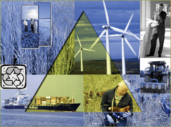

- Multilateral cooperation on many issues, aiming at a fair distribution
of wealth, social justice and environmental stewardship.
- Trade barriers will be gradually removed.
- Developing regions (inside and outside the EU) will be supported to
eliminate poverty.
- The level of CAP subsidies is reduced, with domestic support specifically
targeted at environmental sustainability and to catalyse rural development,
aiming to stimulate the European model of agriculture.
- The economic growth rate in the EU and other OECD countries is strong,
but less then in Global Economy. The economic growth in other regions
is slightly higher then in Global Economy.
- A strong technological development, partly focussed on environmentally
friendly production method.
|
 |